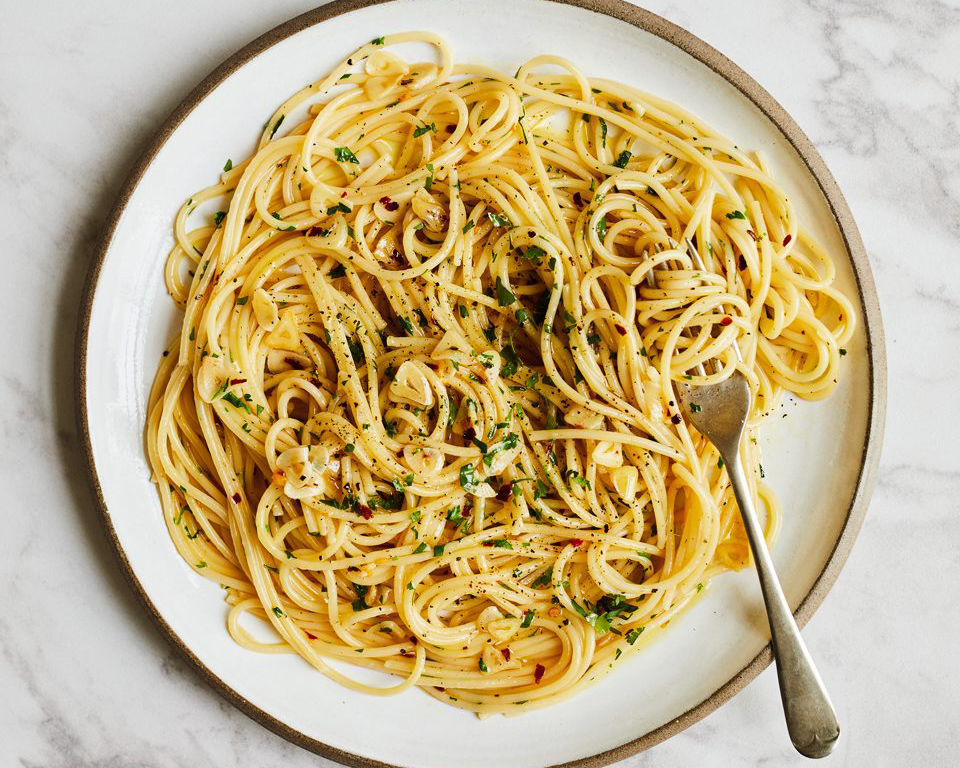

Spaguetti Aglio e Olio

Spaghetti Aglio e Olio is a classic Italian pasta dish known for its simplicity and bold flavors. "Aglio" means garlic, and "Olio" means oil in Italian, and these are the stars of the show in this recipe. The dish is a delightful combination of al dente spaghetti, aromatic sautéed garlic, and the richness of extra-virgin olive oil. A pinch of red pepper flakes (if you like a little heat) and fresh parsley add a touch of elegance to this easy-to-make pasta.
Ingredients
- 225g spaghetti
- 4-6 cloves of garlic, minced
- 1/4 cup extra-virgin olive oil
- Salt, to taste
- Black Pepper, to taste (optional)
- Fresh parsley, chopped, for garnish (optional)
Steps
-
Cook the spaghetti in a large pot of salted boiling water until it's al dente, according to the package instructions. Drain and set aside.
-
In a large skillet, heat the extra-virgin olive oil over medium-low heat. Add the minced garlic and sauté until it becomes fragrant and slightly golden. Be careful not to let it brown too much.
-
If you like a little heat, add a pinch of red pepper flakes to the garlic and oil mixture.
-
Add the cooked spaghetti to the skillet and toss it in the garlic and oil mixture. Make sure the pasta is well-coated.
-
Season with salt and black pepper to taste.
-
Serve the Spaghetti Aglio e Olio in individual plates, garnished with freshly chopped parsley for a burst of freshness and color.